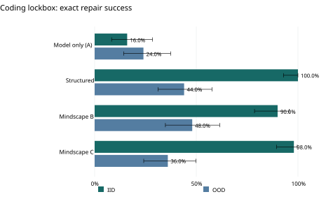
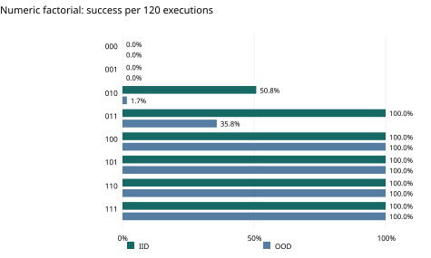
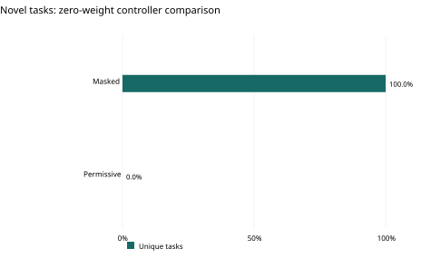

Preserved V1/V2 findings.
Mindscape investigates whether explicit state, bounded actions, and verified experience can make learned systems more inspectable and improve how they solve tasks. The historical record spans locked coding evaluations, controlled numeric interventions, execution audits, and live computation diagnostics.
The frozen v1 coding study is preserved under mindscape-research-complete-v1. Research v2 adds targeted mechanism replication and coding observability, but remains incomplete. The results below describe the archived experimental configurations; they are not a claim of broad model superiority.
Locked evaluation
400
coding executions100 independent tasksFour conditions · Two splits
Controlled interventions
1,920
numeric executions80 distinct tasks · Three seedsEight intervention conditions
Preserved evidence
2,320
indexed coding episodesLearning and lockbox recordsHash-bound, nonduplicating index
Execution counts are coverage measures. Repeated task, seed, and condition combinations are not independent tasks.
Read the scientific gap-closure report ↗Locked coding evaluations
The coding lockbox evaluates 100 independent tasks: 50 familiar-distribution (IID) tasks and 50 structural out-of-distribution (OOD) tasks. Each task is run under four conditions, producing 400 executions. Terminal programs are evaluated with independent hidden tests.
Mindscape C solved 49/50 IID tasks (98%), but 18/50 structural OOD tasks (36%). Mindscape B achieved 90% IID and 48% OOD. Familiar-task success therefore does not establish robust structural generalization.

| Condition | IID success | Structural OOD success |
|---|---|---|
| A · Model-only | 8/50 · 16%95% CI 8.3–28.5% | 12/50 · 24%95% CI 14.3–37.4% |
| Structured | 50/50 · 100%95% CI 92.9–100.0% | 22/50 · 44%95% CI 31.2–57.7% |
| Mindscape B | 45/50 · 90%95% CI 78.6–95.7% | 24/50 · 48%95% CI 34.8–61.5% |
| Mindscape C | 49/50 · 98%95% CI 89.5–99.6% | 18/50 · 36%95% CI 24.1–49.9% |
All conditions share a coding backbone, but differ in supervision and interactions. These comparisons do not isolate an architecture-only causal advantage. Across the 400 executions, 228 succeeded and 172 failed; unsuccessful evidence is retained.
The learning study contains 1,920 executions across four conditions, three seeds, four problem budgets, and two splits. CPU float32 and MPS float16 results occupy different execution strata and should not be pooled as a clean hardware comparison.
Frozen coding-study report ↗What masking controls reveal
The numeric intervention study froze 80 distinct multiplication tasks before execution: 40 IID and 40 OOD tasks. Three trained seeds and eight conditions produced 1,920 repeated executions, including 734 unsuccessful outcomes.
With both neural readouts present and masking removed, IID success was 120/120, while OOD success fell to 43/120 (35.83%). With masking enabled, both splits reached 120/120. Every one of the 19,448 observed action selections had exactly one legal action.

The controller’s contribution
A zero-weight policy solved 24/24 distinct tasks with masking and 0/24 with permissive selection. Identical copies of zero weights are not independent seeds. The exact legal-action filter can identify the procedure’s next operation, so masked success does not demonstrate learned arithmetic or neural necessity.

The additional trained-policy replication contains 288 executions across 24 distinct tasks, three seeds, and four conditions, with 85 failures retained. Masking effects vary by task family; the unsigned 1×4 family has no observed trained-policy gap.
Frozen mechanism protocol ↗Latency and execution cost
The dedicated sequential latency study contains 16 fresh samples, four per condition. Measurements use MPS float16, batch size one, and generation caching disabled. They measure these full experimental paths, whose tool and interaction costs differ.
Explore the evidence
What does an executed repair cost?
Inspect the dedicated historical MPS latency measurements. Four fresh samples per condition; timing includes different tool and interaction paths.
Loading recorded measurements…
View the values and source
| Condition | Samples | Median / p50 | p95 |
|---|---|---|---|
| A · Model-only | 4 | 2.53 s | 3.00 s |
| Structured | 4 | 2.89 s | 3.23 s |
| Mindscape B | 4 | 35.92 s | 44.31 s |
| Mindscape C | 4 | 31.74 s | 32.58 s |
The historical 4.04× throughput observation combines device, precision, and batch-size changes. It is not an individual-task latency improvement or an isolated GPU effect. The live CPU diagnostics include loading and observer overhead, so their timing is not comparable to the original MPS benchmark.
Execution measurement notes ↗Statistics and integrity
Uncertainty is reported at the relevant unit of analysis. Coding success cells use 95% Wilson intervals. Numeric interventions resample task clusters, conditional on the three preserved trained seeds; repeated executions are not treated as independent tasks.
Keep confirmatory and descriptive evidence separate
The original unmasked OOD gap is 64.17 percentage points, with a task-cluster bootstrap 95% interval of 50.0–77.5 points, conditional on three trained seeds.
None of the 18 predeclared per-seed tests in the small replication passes Holm correction at 0.05; the minimum adjusted p-value is 0.140625. A post hoc conservative interval of +66.6 to +100 percentage points for the zero-weight masking effect is descriptive and confined to the three studied numeric task families.
Preserve outcomes and verify the record
All 400 saved coding trajectories agree with independent replay. This confirms saved-record consistency, not 100% software repair success. Five zero-tool trajectories have undefined tool-output agreement.
The gap-closure report records cloud validation passing 138 tests plus six subtests, with no failures, errors, or skips. Preserved artifact hashes, pointers, outcomes, and independent statistical checks support the evidence’s provenance.
Two live diagnostics, bounded coverage
Two actual coding diagnostics record direct model input/output pairs, selected logits, component invocations, edits, timing, and failures. Model-only recorded 39 token/logit pairs; condition C recorded 352 across eight model calls.
The reused historical task is instrumentation evidence, not a new accuracy sample. Historical exact token IDs and logits were not retained. Selected hidden activations and live coverage of every historical adapter remain unmeasured.
What performance establishes
The evidence supports narrow software-repair observations, a strong role for deterministic action constraints in the studied numeric environments, and improved visibility into selected execution paths.
It does not establish general intelligence, broad model superiority, independent cross-domain replication, or a demonstrated benefit from dreaming. Hypothetical plans and derived uncalibrated probabilities remain distinct from executed outcomes.
Local HumanEval results provide separate context: 94/164 tasks (57.32%) for the 0.5B configuration and 98/164 (59.76%) for 1.5B, using one greedy generation, a 512-token cap, and CPython 3.14.7 under WASI. Historical GPT and Gemini report values use different protocols and cannot be read as matched comparisons.
Historical comparison boundaries ↗The remaining
scientific work.
Independent cross-domain and training-pipeline replication
Test whether the mechanisms hold in independently implemented domains and training pipelines.
Broader live adapter coverage and selected hidden activations
Extend prospective observation across conditions and adapters, and record selected internal activations without inventing lost historical telemetry.
Matched historical-model comparison, with approved access
Specify model releases, matching task and interaction protocols, authorized access, and an approved API budget before running comparisons.
More precise confirmatory intervention measurement
Increase independent task coverage and precision under a frozen confirmatory protocol, with explicit multiplicity correction.
These are remaining research objectives, not completed findings or scheduled release commitments.
Research · Experimental systems
Evidence and provenance
Mindscape research package · snapshot 10 October 2026
Source checkout 33c5b565 · scientific gap closure c530faa
All reported results come from preserved documents and benchmark data. No experiments were rerun to build this page.
Explore the reports ›